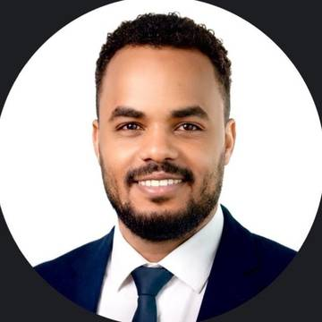

I engineer and deliver the systems that connect the field to the business — from PLCs, SCADA and fuel forecourt controllers to networks, servers and ERP. Over 8 years, I have led automation, commissioning and integration projects across the cement and fuel retail sectors in Saudi Arabia.

I am an Electrical & Electronics Engineer (B.Sc., First Class Honours) specialising in industrial automation and control systems, with a strong second discipline in IT infrastructure and cybersecurity. My work sits at the intersection of operational technology (OT) and information technology (IT) — the space where field instruments, controllers and networks must work reliably together with business systems.
I spent six years at Al-Takamol Cement as a Senior Automation & Instrumentation Engineer, owning PLC, SCADA, DCS and drive systems across a continuous-process plant. Since 2024 I have been a Projects Engineer at Gasoline Company for Petroleum Services, delivering forecourt automation, tank gauging, station infrastructure and ERP integration across a network of fuel stations. In parallel, I lead a projects team part-time at InfraLeap.
As a PMP-certified engineer, I combine hands-on technical depth with structured delivery: scope, cost, risk and change management, contractor and stakeholder coordination, and disciplined commissioning and handover.
PLC programming and integration, SCADA/HMI development, DCS projects, instrumentation, motor drives and protection relays in continuous-process environments.
Forecourt automation with PTS-2 controllers, automatic tank gauging (ATG), tank sensors and calibration, price boards, and head-office/back-office commissioning.
Servers, LAN/WAN design and deployment, site-to-site VPNs, and firewall configuration (Sophos XGS) for distributed, multi-site operations.
Network security, firewalls, incident response, GRC and vulnerability assessment fundamentals — applied to both IT and OT environments. Mentoring a cybersecurity trainee.
Odoo ERP integration with POS and payment platforms, SQL Server databases, and connecting field data to business reporting.
PMP-certified delivery: planning, cost, risk and change control, contract and stakeholder coordination, commissioning, documentation and handover.
Leading a technology projects team, responsible for turning requirements into delivered, supportable systems.
Delivering automation, infrastructure and digital projects across a network of fuel stations — from forecourt equipment to head-office systems.
Owned automation, instrumentation and control systems for a continuous-process cement plant, covering projects, reliability and documentation.
A selection of the types of projects I have delivered. Client-specific details are kept confidential.
Graduated with First Class Honours.
Graduated with a score of 91.4%.
Coursework completed; thesis in progress.
Plus PMP preparation training — PM Tricks.
Accredited engineer, Electrical discipline.
Cybersecurity engineering, networking, cloud, firewalls, incident response and vulnerability assessment.
I'm open to roles in project management, industrial automation, fuel systems and IT infrastructure across Saudi Arabia. I'd be glad to discuss how I can contribute to your team.